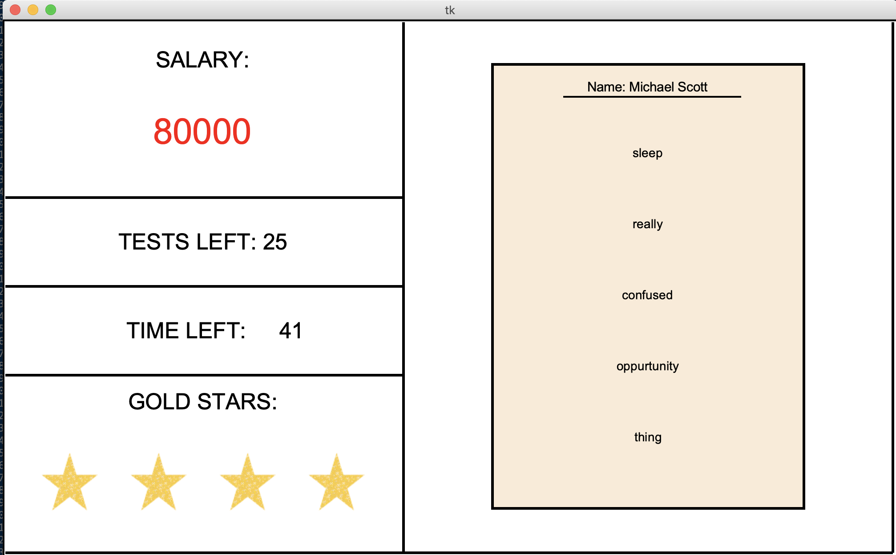

projects.
Safe at School is a web-based interactive game that aims to teach elementary school students how to follow public health guidelines for COVID-19 at school. Users are greeted with a personalized welcome screen after entering their name. They are then led through a series of realistic situations that may occur in a regular school day. This game was created with a team of three other Waterloo CS students for the 2020 Ignition Hacks hackathon. It was the winner for the "Best Presentation" category for Division Delta. The Devpost link above also contains links to my team's Github repository and to the game itself so you can give it a try! The game is best enjoyed on Google Chrome with the volume up!

This Python-made game tests your ability to spot spelling mistakes. Players are challenged to makr a certain amount of spelling tests accoridng to the level they select at the beginning of the game. There is a mix of perfect tests (to which you must give a gold star) and tests with a mistake.
This simulation (created with Processing) depicts the growth of mould on a slice of raisin bread. It incorporates cellular automata concepts in order to decide if a cell becomes mouldy or not. Users can change a variety of factors to influence mould growth, such as light, temperature, and humidity.

This Python program helps users find what phone plan best suits their needs. It takes in parameters such as price, minutes needed, data needed, and preferred carrier.